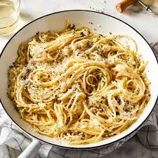

Garlic Pasta

Description
A quick and comforting dish made with just a few pantry staples. Garlic butter pasta combines al dente noodles with rich, fragrant garlic-infused butter for a simple yet satisfying meal that’s ready in minutes.
Ingredients
- Spagehtti
- Butter
- Garlic
- Salt
- Pepper
- Parmesan cheese
- Parsley
Steps
- Cook the pasta: Bring a large pot of salted water to a boil. Cook pasta according to package directions. Drain and set aside.
- Make garlic butter: In a large skillet over medium heat, melt the butter. Add minced garlic and saute for about 1-2 minutes.
- Toss pasta: Add the drained pasta to the skillet. Toss well to coat in the garlic butter. Season with salt and pepper to taste.
- Serve: Top with Parmesan and parsley if using. Serve warm
Home